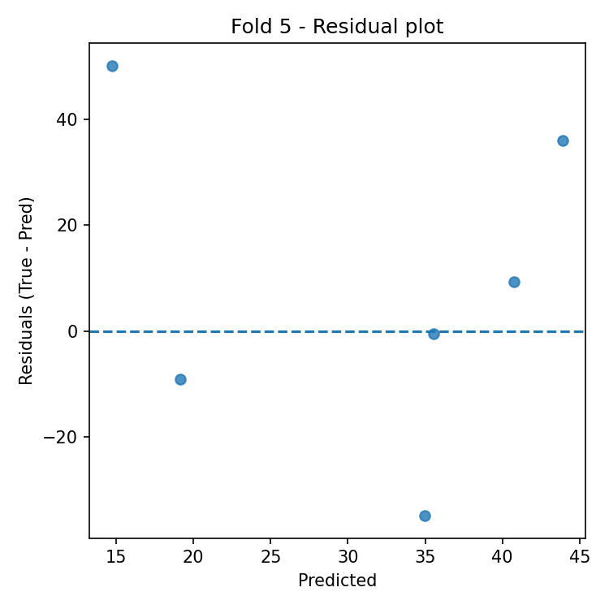
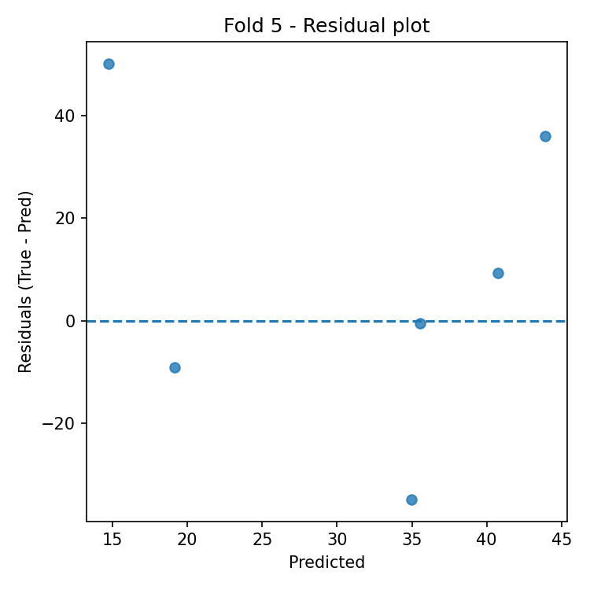

Cross-Validation Results: Automatic Report and Interpretation
Metrics by Fold
| Fold |
R2 |
MSE |
RMSE |
MAE |
| 1 |
-0.720691 |
1308.076071 |
36.167334 |
26.821429 |
| 2 |
0.503085 |
106.284583 |
10.309441 |
7.241667 |
| 3 |
-6.137103 |
693.885000 |
26.341697 |
22.933333 |
| 4 |
-1.630387 |
263.038750 |
16.218469 |
14.041667 |
| 5 |
-0.076157 |
869.893750 |
29.493961 |
23.375000 |
Feature Importance (mean ± std)
| feature |
mean_importance |
std_importance |
| OR |
0.147981 |
0.025366 |
| TL |
0.141666 |
0.026603 |
| TR |
0.135179 |
0.043122 |
| PL |
0.112508 |
0.035305 |
| PR |
0.101191 |
0.053455 |
| CR |
0.088390 |
0.014126 |
| FR |
0.072736 |
0.015300 |
| FL |
0.070186 |
0.022467 |
| CL |
0.066200 |
0.011753 |
| OL |
0.063963 |
0.020200 |
Main Plots
feature_importances_mean_std.png
feature_importances_correlation_heatmap.png
best_fold_2_feature_importances.png
True vs Predicted Scatter Plots (by fold)
Residual Plots (by fold)
 

Automatic Interpretation
Overall Performance
- Mean R² across folds: -1.612 (± 2.651).
- Average error: RMSE = 23.706, MAE = 18.883 (same unit as target variable).
Model Stability
- R² variability across folds is high (std = 2.651).
- Average feature importance stability across folds: 0.027 (lower = more stable).
Most Important Features (average across all folds)
- Top-3: OR (0.148), TL (0.142), TR (0.135).
Best Fold
- Best fold: 2 with R² = 0.503.
- In the best fold, the most important features are: PL (0.167), OR (0.161), TL (0.141).
Residual Analysis (best fold)
- Residuals–predictions correlation: 0.292 (0 ≈ absence of linear bias).
- |Residuals|–predictions correlation: -0.360 (positive values indicate possible heteroscedasticity).
- Outliers (|res| > 3·std): 0.